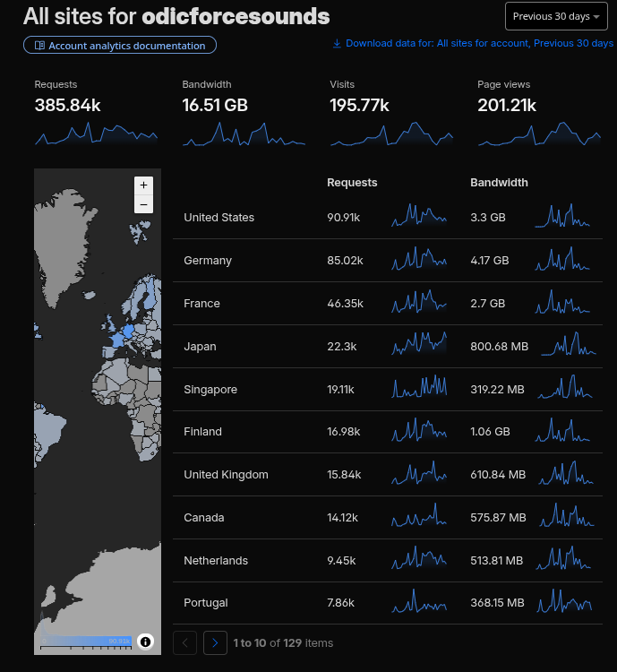

195.770 Unique Visitors in the Last Month?
Cloudflare is trying to give me a FALSE sensation of the number of visits. I don't believe on this results
Cloudflare developers, please fix this problem... If the results point to 10 vistors in one single month I would believe.
A unique visitor is a decision, not a fact. The dashboard has to guess whether two requests are the same person, and it guesses with an address, a user agent, a cookie or a fingerprint. When the address changes, the guess becomes a new person. Every scanner that rotates through a pool of proxies is counted as a crowd.
This site is a few static pages with no forms and no reason to be linked from anywhere. A hundred and ninety five thousand unique visitors would mean that one in every few thousand people on the planet found it in a month, and that none of them left a comment anywhere. That is not statistics, that is an artefact.
There is another reading, and it is worse than a bug: the number is correct, and almost all of it is automated traffic. If the bots are the majority, then the dashboard is not inflating anything, it is showing exactly what the Internet is made of. A site with no audience and no promotion would then be receiving hundreds of thousands of requests from scripts that have no idea what they are reading.
I prefer the bug. It is easier to fix and much less sad.
I trust the log lines I can read, the requests I can group by hand, and the slow accumulation of visits that come back on the same day of the week. Those numbers are small and boring, and they are the only ones that describe a reader.
So, Cloudflare developers, please fix this problem. If the results point to 10 visitors in one single month, I would believe.